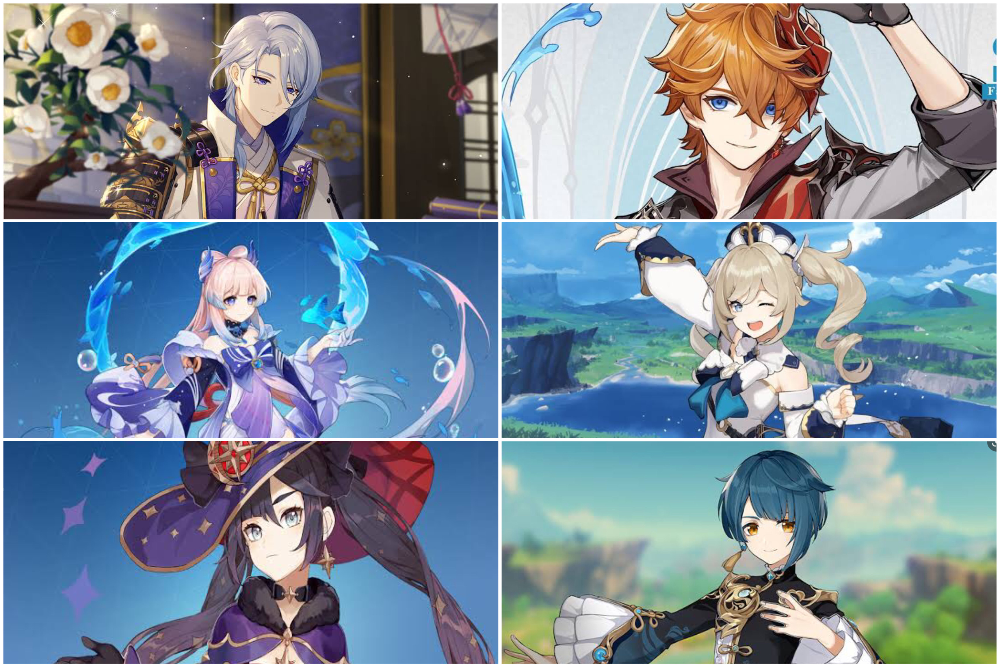

HYDRO ELEMENT
The hydro element is one of the most versatile elements in this world. It can work with Electro, Pyro, and Cryo. It grants very strong elemental reactions with each of its corresponding element combinations. Hydro can inflict the “Wet” status effect which brings us to its reactions.
When Cryo hits a wet enemy, it can freeze them, freezing their movement and enabling a possibility for a claymore character to shatter. If you pair hydro with electro, you get Electro-Charged. This reaction constantly deals electro damage and bounces between Wet enemies. Last but not the least, Pyro. When pyro and hydro meet each other (in any order), Vaporize is inflicted. Giving whichever element used to trigger it higher damage.
Hydro Element Characters
All Hydro characters in Genshin Impact are Ayato, Kokomi, Mona, Tartaglia, Barbara and Xingqiu.
